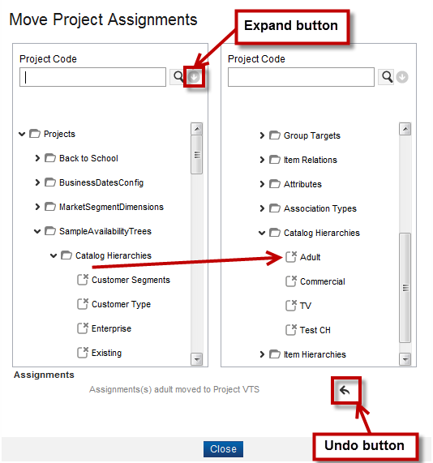

Move Project Commands
In Catalog, you can drag and drop the objects from one tree node to another tree node, from one table to another table or tree instead of opening a finder, and search or select objects to associate them to different projects by completing these steps:
- Click Current Project > Manage from the menu bar to launch the Project Search Results page.
- From the Project Search Results page, select the checkbox next to the project that you want and then click Move to launch the Move Projects Assignments dialog.
- All the projects available in the Catalog application appear in this dialog. Click any object from a project from the dialog's left side.
Note: The selected object's font size increases upon selection.
- Drag the selected object and drop it in another project on the right side.

- A confirmation message appears under the Assignments heading. To undo the most recent move, click the Undo button.
- Click the Close button to return to the Projects page.
Search the Project
To conduct a search from the Move Project Assignments page, follow these steps:
- Click the Expand button. The following three fields are available as search criteria:
- Enter your search criteria in the fields, and then click the Search button.
|